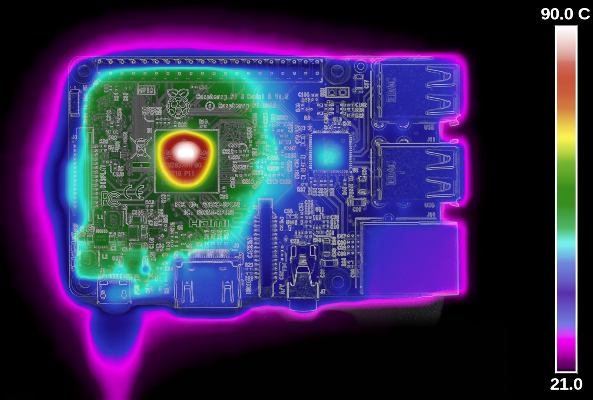

The Autopsy Report · Device #062
The Raspberry Pi
The little green board that put a computer in fifty million pockets, classrooms, and closets. This is the story of the whole family — and one generation in particular, the Pi 3, whose government paperwork we can read line by line. Family history
What is this thing?
The Raspberry Pi is a single-board computer — a complete, working computer on one small circuit board, about the size of a deck of cards. No case, no power brick in the box, no hard drive: you plug in a keyboard, a monitor, a phone charger for power, and a memory card for storage, and it boots into a full desktop. It was designed to be cheap enough that a school could buy a classroom's worth and a student could afford one out of pocket. Family history · Pi 3 Model B, official specs
The family has grown a lot since 2012. The original Pi, the Pi 2, the Pi 3 range, the Pi 4, the Pi 5, the tiny Pi Zero line, the Pi 400 (a Pi built into a keyboard), the Pico microcontrollers — each generation faster than the last, each one backward-compatible enough that the software mostly just works. We treat the whole family as one device here, because that's how most people experience it: "a Pi is a Pi." But the chips change generation to generation, so we name exactly which model every claim belongs to. Our representative board — the one in the photo, and the one with a public FCC filing — is the Pi 3 Model B, the best-selling generation's most famous member. Family history · Pi 3 Model B, official specs
Not yet on our bench
Let's be upfront: no Raspberry Pi has sat on our bench yet. We haven't disassembled one, captured a boot log, measured its rails, or photographed our own unit — because we don't own one yet. Everything below comes from the Raspberry Pi organization's own documents, the chip vendors' datasheets, and the Pi's public FCC filing. Where the public record ends, we say so. When a Pi finally lands on the bench, this page gets a second act: our own photos, our own boot log, our own measurements.
A short history
- 2012The first Raspberry Pi ships. The Raspberry Pi Foundation — a charity based in Cambridge, England — set out to get programmable computers back into kids' hands, and the $35 board sells far beyond the classroom. Wikipedia
- February 2015Sales pass 5 million, making the Pi the best-selling British computer ever. The commercial arm, Raspberry Pi Trading Ltd, is already funding the charity's education work. Wikipedia
- February 2016The Pi 3 Model B arrives: the first Pi with Wi-Fi and Bluetooth built onto the board, and the first 64-bit Pi. It becomes the family's workhorse — the one in classrooms, in hobby projects, and in the photo above. Wikipedia · Official specs
- March 2018The Pi 3 Model B+ launches at $35 on Pi Day: faster processor, dual-band Wi-Fi, and — nominally — gigabit Ethernet. (It's wired through USB 2.0 internally, so real-world throughput tops out around 300 Mbps.) It also gains a header for Power-over-Ethernet. CNX Software
- Late 2018The Pi 3 Model A+ follows: the same faster chip in a smaller, cheaper board with half the RAM and one USB port — the spiritual successor to the original cut-down Model A. Official specs
- June 2019The Pi 4 jumps to up to 8 GB of RAM and true gigabit Ethernet, and swaps the full-size HDMI for two micro-HDMI ports — the first Pi that feels like a real desktop replacement. Wikipedia
- October 2023The Pi 5 lands with the RP1 — the first Pi to use silicon designed in-house at Raspberry Pi, an I/O controller handling USB, Ethernet, cameras, and GPIO, working alongside the Broadcom BCM2712 application processor. The main processor is still Broadcom; the in-house part is the I/O. RP1 announcement · Pi 5 announcement
- June 2024Raspberry Pi lists on the London Stock Exchange, raising $200 million — a charity-born project going public without abandoning the $35 board. By this point more than 50 million Pis have sold. Wikipedia
The outside
A Pi 3 Model B is a bare board, 85 × 56 mm, with its personality written right on the silkscreen. Around the edges, counter-clockwise from the power corner: a micro-USB port that takes 5 volts (the official spec calls for a 2.5-amp supply), a full-size HDMI port, a 3.5 mm jack that carries both audio and composite video, four USB 2.0 ports, a 10/100 Ethernet jack, the micro-SD card slot underneath (that's the hard drive), a 40-pin GPIO header along one edge for wiring up your own electronics, and the little camera and display ribbon connectors. No power switch — you plug it in, it boots. Official specs

The board
One chip dominates the middle of the Pi 3B: the Broadcom BCM2837, a quad-core 64-bit ARM processor running at 1.2 GHz. Next to it sits 1 GB of LPDDR2 memory. The wireless lives in a small metal can on the board — a cavity-shielded module with the antenna etched right into the PCB next to it, a distinctive triangular shape you'll recognize in every Pi 3 photo. Ethernet comes off a separate USB-hub-and-Ethernet chip, which is why the Pi 3's wired network shares bandwidth with its USB ports. Power enters at 5 V and gets stepped down on-board for the 3.3 V, 1.8 V, and core voltages the chips need. There's no BIOS chip full of secrets here: the Pi boots straight off the micro-SD card, starting with code baked into the SoC itself. Official specs · FCC test report
Under the microscope: the chips
What public records say is on the Pi 3 Model B, and how sure we are. Confirmed means a primary source — Raspberry Pi's own documents, a chip vendor's datasheet, or the FCC filing — says so. Likely means reputable public hardware records agree, but we haven't traced it to a primary source. Nothing here comes from our own bench — yet.
| Chip | What it does | How we know | Dig deeper |
|---|---|---|---|
| Broadcom BCM2837 quad-core ARM Cortex-A53 @ 1.2 GHz |
The main processor — the whole computer, more or less. | Confirmed Raspberry Pi's official specification for the 3 Model B. | Official product page |
| 1 GB LPDDR2 SDRAM | The board's working memory, packaged next to the processor. | Confirmed Raspberry Pi's official specification for the 3 Model B. | Official product page |
| Broadcom wireless combo chip public records identify BCM43438 |
2.4 GHz 802.11n Wi-Fi plus Bluetooth 4.1, inside the shielded can. | Likely Public hardware records agree on the part; the official spec confirms wireless LAN and Bluetooth without naming the chip. The FCC filing tests the radio. | FCC test report (PDF) |
| USB hub + 10/100 Ethernet controller | Runs the four USB ports and the wired network jack off one chip. | Likely Public hardware records for the 3B name this part; the official spec confirms 4× USB 2.0 and 10/100 Ethernet. | Official product page |
| micro-SD slot | The Pi's "hard drive" — the operating system lives on the card. | Confirmed Raspberry Pi's official specification. | Official product page |
The exact power-management chip and the board's revision history are details the public record doesn't pin down cleanly for the 3B — those wait for the bench. And a note on the broader family: the 3B+'s faster BCM2837B0 (1.4 GHz) and its Cypress CYW43455 dual-band Wi-Fi chip are documented in contemporary launch reporting, with a public datasheet for the wireless part. CNX Software · CYW43455 datasheet (PDF)
The government's file on this board
Because the Pi 3B has a radio in it, Raspberry Pi Trading Ltd had to get it through the FCC before selling it in the United States. The filing is under FCC ID 2ABCB-RPI32 ("2ABCB" is Raspberry Pi Trading's grantee code). The public test report is dated January 29, 2016 — a month before the board launched — and notes that the tested unit was a prototype. It covers Part 15.247 testing: the 2.4 GHz Wi-Fi radio, measured in a lab, doing exactly what the label says it does. The filing also includes internal photos of the board, the earliest public look at the Pi 3's insides. FCC test report (PDF)
Browse it yourself: the test report above is the core of the public file. Schematics and the full theory of operation are the parts companies usually keep confidential — the trade this system makes is public photos and lab measurements, private blueprints.
Listening, not knocking
Our debug posture on every device: we listen, we don't knock. We document interfaces that exist and the manufacturer's own safe procedures — never bypasses, extractions, keys, or firmware redistribution. For the Pi family, the honest version of this section is short: the Pi is one of the most documented boards on earth, and Raspberry Pi publishes board schematics and hardware documentation on its official documentation site. The serial console on the GPIO header is a documented developer interface, not a secret. When a Pi reaches our bench, we'll capture its boot log read-only and publish what it says — that's the whole plan, and it's all listening. Official docs: schematics & drawings
The one power note worth keeping: the official spec wants 5 volts at up to 2.5 amps for the 3B. Underpowered chargers are the classic cause of the little lightning-bolt warning and mysterious crashes — the board will happily try to run on less and unhappily tell you about it. Official specs
What we didn't do
- We have no Pi on the bench, so: no disassembly, no boot-log capture, no power measurements, no original-unit photography.
- We did not extract, modify, or redistribute any firmware.
- We did not test the radio against its FCC filing — the lab already did, in January 2016.
- Nothing in this report bypasses any lock, credential, or protection. The Pi has none to bypass: it boots from its micro-SD card, and this report uses only public documents.
By the numbers
- Family: Raspberry Pi, all generations (2012 – present) Family history
- Representative board: Pi 3 Model B — quad-core BCM2837 @ 1.2 GHz, 1 GB LPDDR2, 2.4 GHz Wi-Fi + Bluetooth 4.1, 10/100 Ethernet, 4× USB 2.0, micro-SD storage, 5 V / 2.5 A power Official specs
- FCC ID (3B): 2ABCB-RPI32 — tested January 29, 2016, prototype unit FCC test report (PDF)
- Launch price: $35 for the classic models — the 3B+ launched at $35 on Pi Day 2018 CNX Software
- Scale: 5M+ by February 2015 (best-selling British computer); 50M+ by 2024 Family history
- Maker: Raspberry Pi Foundation (charity, Cambridge) → Raspberry Pi Trading Ltd (commercial arm) Family history
What awaits the bench
- A Pi of our own — exact board revision, our own photos, our own measurements.
- A read-only boot-log capture from the serial console, so we can document what the board says when it wakes up.
- Verification of the wireless chip marking against the public record (BCM43438 on the 3B).
- Power-draw measurements under load, and whether the classic undervoltage warning reproduces on a known-good supply.
- One day, the same treatment for a Pi 4, a Pi 5, and a Zero — the family deserves the full shelf.
Words to know
Every term this page uses, in plain English. No prior knowledge required.
- Single-board computer
- A complete computer on one circuit board — processor, memory, and ports, no case required.
- System on a chip (SoC)
- The whole computer — processor, graphics, and more — on one piece of silicon. The BCM2837 is the Pi 3's SoC.
- GPIO
- General-purpose input/output — the row of pins on the Pi's edge that lets it talk to sensors, motors, lights, and other electronics.
- Serial console
- A simple text interface that lets you watch (and talk to) a board as it boots, over a few wires.
- micro-SD card
- The tiny memory card that acts as the Pi's hard drive — the operating system lives on it.
- Power over Ethernet (PoE)
- A way to deliver power and data over one network cable. The Pi 3B+ added a header for an optional PoE add-on.
- 802.11n / 802.11ac
- Generations of the Wi-Fi standard. The Pi 3B speaks n (2.4 GHz); the 3B+ adds ac (dual-band).
- FCC
- The Federal Communications Commission — the U.S. agency that regulates anything that transmits radio. Every wireless gadget sold here has to pass its tests first.
- FCC ID
- The ID the FCC assigns to each approved wireless product. The first few characters are the company's grantee code; the rest is the maker's model code.
- Grantee code
- The first characters of an FCC ID, identifying the company that registered the product — 2ABCB for Raspberry Pi Trading.
Sources & confidence
- Family history, sales figures, launch dates, IPO: the Raspberry Pi family overview, cross-checked against contemporary reporting. High confidence in the well-documented milestones.
- Pi 3 Model B specs (SoC, RAM, wireless, ports, power): Raspberry Pi's official product page. High confidence.
- FCC ID 2ABCB-RPI32, January 29 2016 test date, prototype status, Part 15.247: the public FCC test report. High confidence.
- Pi 3B+ launch details ($35, 1.4 GHz, dual-band Wi-Fi, PoE header, USB-2.0-limited Ethernet): contemporary launch reporting. High confidence.
- Wireless chip identity on the 3B (BCM43438): public hardware records, not a primary source. Marked Likely.
- Anything not listed here is unknown until the bench says otherwise. We'll say so, out loud, when that's the case.
The device photo is a freely licensed stock photo, credited in its caption — not a photo of our own unit, because we don't have one yet.
Legal note. BareBoard is an educational project. Everything on this page is our own writing based on public documents — our summaries, our analysis. We don't publish, host, or distribute firmware, keys, passwords, or credentials. Product names and trademarks belong to their respective owners and appear here only to identify the hardware. If you believe anything here infringes your rights, contact us and we'll address it promptly.